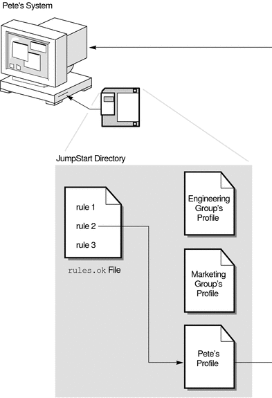
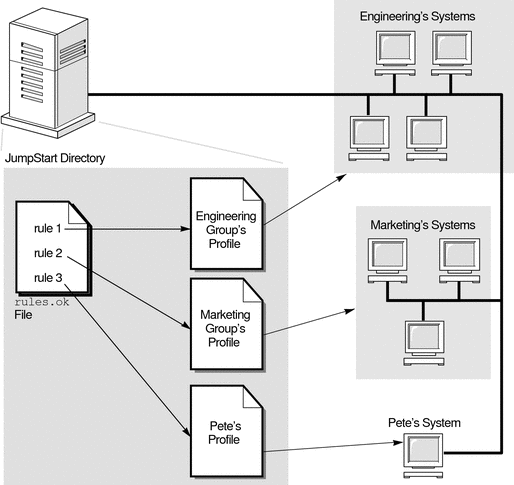
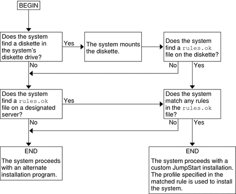

|
|||
|
1. Where to Find Solaris Installation Planning Information 2. Custom JumpStart (Overview) 3. Preparing Custom JumpStart Installations (Tasks) 4. Using Optional Custom JumpStart Features (Tasks) 5. Creating Custom Rule and Probe Keywords (Tasks) 6. Performing a Custom JumpStart Installation (Tasks) 7. Installing With Custom JumpStart (Examples) 8. Custom JumpStart (Reference) |
How the JumpStart Program Installs Solaris SoftwareAfter you validate the rules file and the profiles, you can begin a custom JumpStart installation. The JumpStart program reads the rules.ok file. Then, the JumpStart program searches for the first rule with defined system attributes that match the system on which the JumpStart program is attempting to install the Solaris software. If a match occurs, the JumpStart program uses the profile that is specified in the rule to install the Solaris software on the system. Figure 2-1 illustrates how a custom JumpStart installation works on a standalone, nonnetworked system. The system administrator initiates the custom JumpStart installation on Pete's system. The JumpStart program accesses the rules files on the diskette in the system's diskette drive. The JumpStart program matches rule 2 to the system. rule 2 specifies that the JumpStart program use Pete's profile to install the Solaris software. The JumpStart program reads Pete's profile and installs the Solaris software, based on the instructions that the system administrator specified in Pete's profile. Figure 2-1 How a Custom JumpStart Installation Works: nonnetworked ExampleFigure 2-2 illustrates how a custom JumpStart installation works with more than one system on a network. Previously, the system administrator set up different profiles and saved the profiles on a single server. The system administrator initiates the custom JumpStart installation on one of the engineering systems. The JumpStart program accesses the rules files in the JumpStart/ directory on the server. The JumpStart program matches the engineering system to rule 1. rule 1 specifies that the JumpStart program use Engineering Group's Profile to install the Solaris software. The JumpStart program reads Engineering Group's Profile and installs the Solaris software, based on the instructions that the system administrator specified in Engineering Group's Profile. Figure 2-2 How a Custom JumpStart Installation Works: Networked ExampleFigure 2-3 describes the order in which the JumpStart program searches for custom JumpStart files. Figure 2-3 What Happens During a Custom JumpStart Installation |
||
|